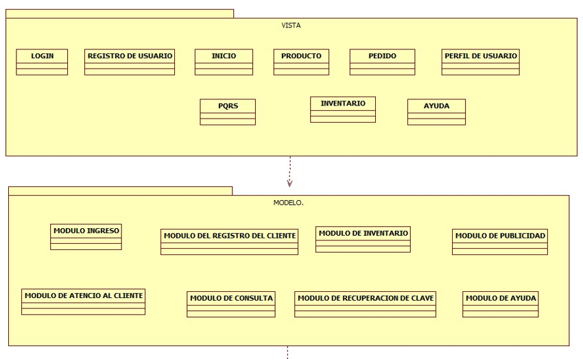
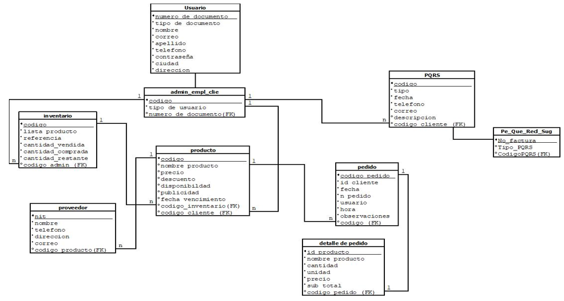
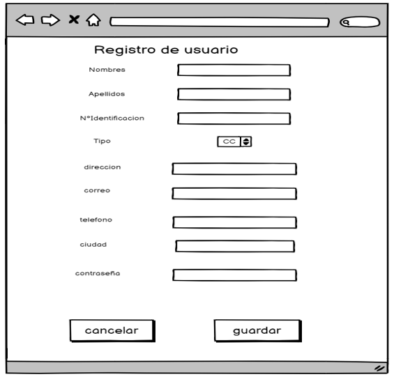
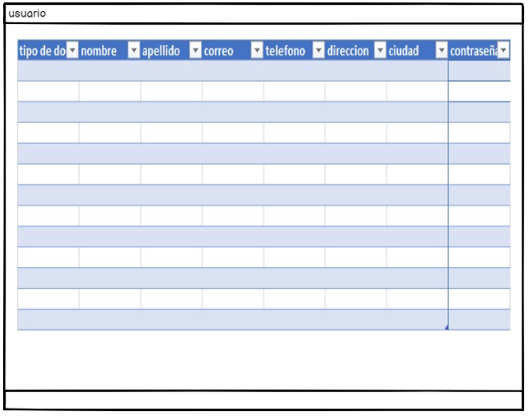
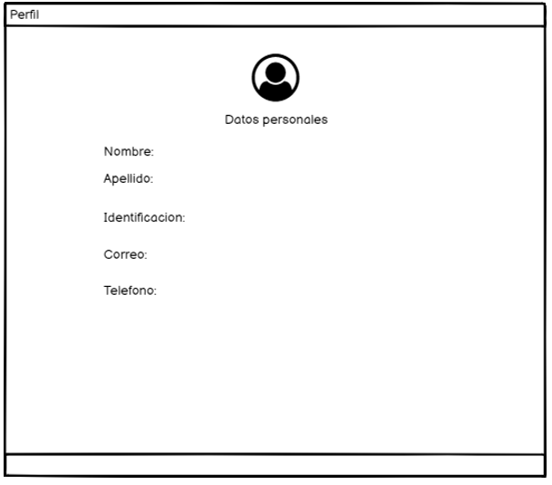
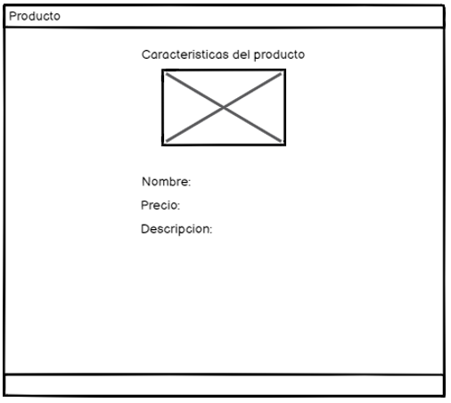
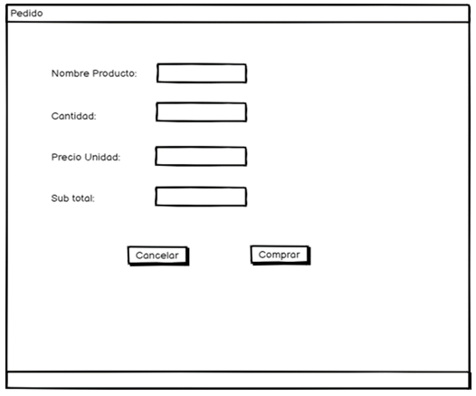
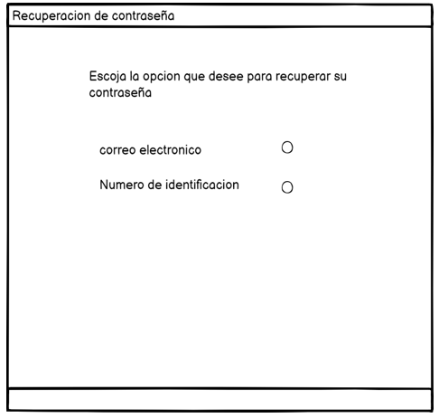

SERVICIO NACIONAL DE APRENDIZAJE (Centro Industrial y de Aviación)
Informe del diseño
Presentado por:
- Cristian Gonzalez
- María Castillo
- Ronnie Rodriguez
- Luis Escorcia
| Fecha | Versión | Descripción/cambio | Autor |
| 20/04/2022. | 1 | Diseño de arquitectura de hardware, diseño de arquitectura de software, diseño de interfaces, Modelo relacional | Diseño de interfaces |
| 21/04/2022 | 2 | Diseño de interfaces | Proyecto Grupo 5 |
1. Propósito
El propósito del informe es dejar diseñado la arquitectura de hardware, de software, el diseño de las interfaces y el modelo relacional del sistema de información que se le va a implementar a la microempresa Dulcerías el parque.
2. Alcance
El alcance de nuestro proyecto tiene como finalidad la elaboración de un sistema de información de tipo web el cual se realizará para el control de las ventas, manejo de inventario, control de los clientes, promocionar los productos de la microempresa Dulcería Parque. Este sistema va a contener un módulo de ventas, módulo de inventario y modulo servicio-cliente.
3. Definiciones, Acrónimos, y Abreviatura
ARQUITECTURA DE SOFTWARE: La arquitectura de software de un sistema computacional, es la estructura o estructuras del sistema. Dicha estructura comprende sistemas, subsistemas, componentes e interfaces, así como las relaciones entre ellos (BASS,2003).
PRODUCTO: Es una unidad lógica de compartición y empaquetado de software que tiene un desarrollo gestionado en un ciclo de la vida y del mantenimiento y atributo visible para el cliente. Puede ser una colección del componente producto de software cuya licencia puede depender de la licencia de la oferta total.
PROVEEDOR: Un proveedor del servicio de aplicación o ASP (del inglés application servicer provider). En una empresa que ofrece del servicio de computación a su cliente a través de una red en el software ofertando mediante un modelo ASP es conocido también como software o demanda software como servicio (saaas).
INVENTARIO: Es un programa informático creado para ayudar y facilitar la gestión del inventario de una empresa para ellos el programa requiere una cuenta para entrada y salida de los productos que se producen en las distintas instalaciones, puntos de ventas, etc.
USUARIOS: Es utilizado generalmente en el campo de la tecnología informática para referirse a quien utiliza determinado hardware y software mediante el cual obtiene un servicio.
ATENCION AL CLIENTE: Un software para atención al cliente es una solución que proporciona herramienta para la comunicación con el cliente y prospecto, recoge y almacena los datos del target incluida a la interacción con el mismo.
INTERFACES DE USUARIO: El diseño de la interfaz de usuario crea un medio eficaz de comunicación entre los seres humanos y la computadora. Siguiendo un conjunto de principios de diseño de la interfaz, el diseño identifica los objetos y acciones de ésta y luego crea una pantalla que constituye la base del prototipo de la interfaz de usuario.
ARQUITECTURA DE HARDWARE: La arquitectura física del sistema hace referencia a la topología del sistema, mostrando como serán asignados en forma física los diferentes subsistemas o componentes (software) a los diferentes equipos de computación (hardware) que se utilizan para implementar el sistema de información.
MODELO RELACIONAL: se basa en el concepto matemático de relación, que gráficamente se representa mediante una tabla. Es decir, una relación es una tabla, con columnas y filas. Un SGBD sólo necesita que el usuario pueda percibir la base de datos como un conjunto de tablas.
MODELO ENTIDAD-RELACION: es un tipo de diagrama de flujo que ilustra cómo las "entidades", como personas, objetos o conceptos, se relacionan entre sí dentro de un sistema.
4. Personal
| NOMBRE | CORREO | TELEFONO |
| María Castillo | Mariacastillo2002@gmail.com | 3013229158 |
| Cristian González | cristiandavidgonzalezjimenez@gmail.com | 3007081492 |
| Luis Escorcia | Luisescorcia18x@gmail.com | 3005106710 |
| Ronnie Rodriguez | Ronnier0828@gmail.com | 3005284344 |
5. Situación Actual
En este momento la microempresa se encuentra con elementos a favor y en contra ya que, como esta ubicada en un lugar muy comercial y pues personas de ese mismo sector tienen la facilidad de llegar y hacer sus compras de una manera muy cómoda y sencilla para la microempresa, carece de un aplicativo web donde se puede dar a conocer sus productos a las personas que no estén cerca del sector en el que se encuentra ubicado el local y también de un sistema de información para sus clientes ya que hoy en día todo se maneja de manera física y virtual.
6. Perspectiva del Producto
Se proyecta implementar un sistema de información que permita controlar las ganancias de las ventas, además que permita registrar todos los recorridos realizados por las unidades durante el día. El sistema de información a implementarse es un software independiente, ya que no tendrá relación con otros sistemas.
7. Funciones del Producto
- Selección del proveedor
- La orden de compra
- Emisión de la orden de compra
- Control de calidad
- Planificación de compras
- Productos catalogados y no catalogados
- Permite realizar quejas y reclamos.
- Permite registrar los productos de la empresa
- Permite registrar a sus clientes
- Permitir realizar pedidos
8. Características de Usuario
Los usuarios que manejarán el sistema de información son: Empleados y trabajadores de la Dulcería el Parque.
| USUARIO | CARACTERÍSTICAS |
| Administrador | Tiene acceso a todas las funciones del sistema del software. |
| Trabajador | Solo tiene información sobre los pedidos que entran y salen de la microempresa y procesarlos. |
| Cliente | Solo tiene información sobre los actuales y nuevos productos que venderá la microempresa. |
9. Requerimientos Funcionales
| CODIGO | DESCRIPCION |
| RF001 | En este módulo se permite el ingreso de los usuarios validar su identidad ante el sistema, debe ingresar su correo electrónico o teléfono y contraseña para tener acceso a las funcionalidades de la aplicación |
| RF002 | En este módulo se realizará el registro de los clientes al sistema por lo cual deberá llenar un formulario con sus datos personales |
| RF003 | Esta área es para el administrador quien llevara un control de los productos que entran y salen del negocio |
| RF004 | Con este módulo permitirá al usuario visualizar los diferentes productos en disponibilidad, descuentos que este a disponibilidad con sus características precios a variar |
| RF005 | En este módulo el usuario podrá registrar una solicitud detallada de alguna queja, reclamo, sugerencia o peticiones que permita al negocio mejorar sus funciones |
| RF006 | En este le permite al administrador consultar toda la información de la microempresa (precio, clientes, proveedores y productos) lo cual ayuda al administrador mantenerlo informado de las funciones del establecimiento |
| RF007 | Con este módulo el usuario tiene la opción de recuperar su contraseña en caso de olvidarla y debe llenar unos campos obligatorios |
| RF008 | En este módulo el usuario encontrar el botón de ayuda el cual va a mostrarle un manual de instrucciones de uso de la aplicación web |
10. Diseño Arq. Hardware

DIAGRAMA DE PAQUETES
DIAGRAMA DE COMPONENTES

12. Modelo Relacional
• Login

• Inicio

• Inventario

• Registro de Usuarios
• PQRS

• Informacion de usuario
• Perfil de usuario
• Producto
• Pedido
• Ayuda al usuario

• Recuperacion de contraseña

14. Conclusion
En conclusion, el informe se realizo como el proposito de dejar diseñado la arquitectura de hardware y software, las diferentes interfaces de usuario y modelo relacional de la base de datos del Sistema de informacion, para asi poder pasar a construir dicho Sistema del aplicativo web propuesto por nuestro grupo de trabajo del Proyecto de formacion a la microempresa Dulcerias el parque.